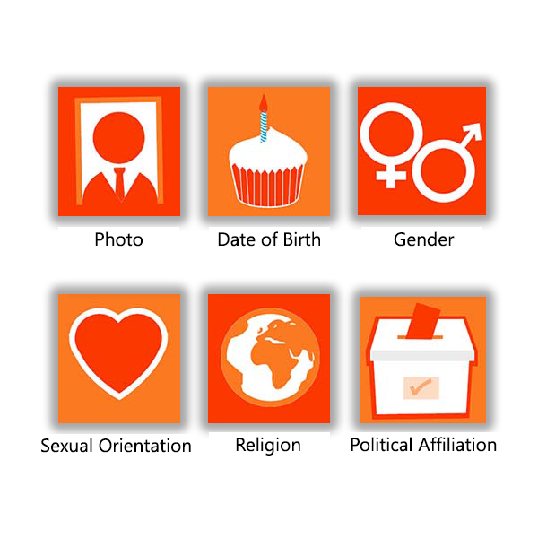
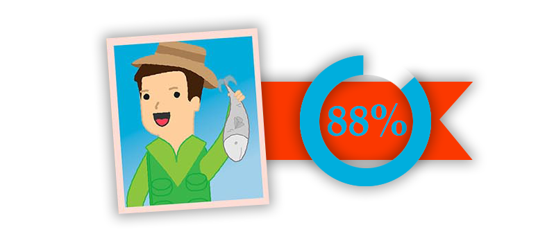
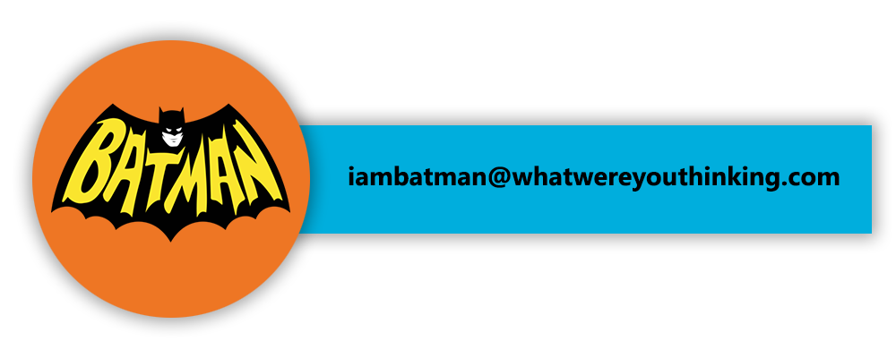

#1. BE SURE NOT TO GET PERSONAL
It is not necessary to include Your
PHOTO, DATE OF BIRTH, GENDER, SEXUAL ORIENTATION, RELIGION, POLITICAL AFFILIATION
Employers may base decisions on personal data. By not including this information, you prevent the possibility of discrimination.
88% is the job rejection rate if you include a photo on your application.
Some employers will dismiss CVs with a photo immediately to avoid a potential accusation of discrimination.
#2. CHECK SPELLING ERRORS AND POOR GRAMMAR
According to the Recruitment and Employment Commission:
Around 50% of all CVs received by recruitment consultants contain spelling or grammatical errors.
21-25 year olds are the most likely culprits.
In this age group, graduates are twice as likely to make mistakes as those who did not go to university.
✓ If you find correct spelling and grammar difficult challanging tricky, use spell checker and be sure to prrofread.
✓ Reading your CV in print, rather than on screen can help you to identify mistakes.
✓ It is also a good idea to ask a friend or family memeber to check through your work.
#3. DO NOT ADD IRRELEVANT WORK EXPERIENCE
Your CV should show the employer as quickly as possible that you match their requirements for the role. Cut out any irrelevant information which will dilute this key message.
If information about any irrelevant work experience is needed to fill gaps in your CV, limit details tominimum.
Read the job description carefully and decide what information is actually relevant to the role.
Write down a list of keywords or phrases to help you focus your CV as much as possible.
The Average job search lasts 18 weeks but is longer for candidates without a strong CV.
#4. DO NOT SHOW OFF HOBBIES AND ODDITIES
For the most part, employer do not need, or want to know what you get up to in your spare time.
This is also true for non-professional achievements, such as being nominated secondary school team captain, or having the ability to play 'Chop Sticks' on a toy piano with your big toes.
An Exception is if you have a hobby that relates to the role you are applying for. A novelty pen designer for instance.
Your 'fun' contact email address, while expressing your personality, may cost you a potential interview.
76% of CVs are ignored if the email address is unprofessional.
#5. DO NOT BE NEGATIVE
It's important to use positive language on your CV. Replace negative phrases with positive one.
Like
"A valuable lession."
is instead
"A MISTAKE"
Resist the bad temptation to bad mouth previous employers.
Research has shown there are terms and phrases to avoid using, even in a positive context.
"I have an aggressive passion for what I do."
AVOID WORDS SUCH AS
#awful, #bad, #fault, #hate, #mistake, #nothing, #problem, #aggressive etc.
92% of recruiters would reject candidates who made negative comments on social media.
#6. DO NOT PUT THE CART BEFORE THE HORSE
Perspective employers will not need references intil much later in the recruitment process, so there is no need to include then on your CV.
Instead, keep an up to date list of references separately ready to send on if requsted.
"References available on request"
This states the obvious therefore it's not necessary to include.
Remove this and you are left with more space on your CV to dazzie the reader with your excellent skills and experience.
5-7 Seconds! The average time recruiters spend looking at a CV.
#7. DO NOT BEND THE TRUTH
Everyone adds a little sparkle to their CV, but avoid the temptation to go overboard. It is likely you'll be found out if you do get the job.
Jobseekers should be sure the position they are applying for is a good fit for them. If it is, there will be no need to lie as your true qualifications will speak for themselves.
?
Have you ever lied on a CV?
Yes, several times : 9.5%
Yes, once : 4.1%
No, but I'd consider it : 12.9%
No, never : 73.5%